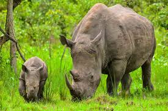
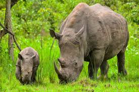

Exploring the World: My Travel Adventures
Date: July 1, 2024
Traveling has always been a passion of mine. Whether it's exploring the bustling streets of Nairobi to the serene beaches of Mombasa to hiking through the serene landscapes of Mt.Kenya my adventures have been nothing short of spectacular a, each journey brings new experiences and lessons. It allows me to explore vibrant cities, relax in scenic landscapes, and immerse myself in different cultures. In this blog post, I’ll share some highlights from my travels, my most memorable travel stories and offer tips on how to make the most of your adventures.
Embracing the Journey
Every journey brings new experiences and stories. Whether it’s hiking through lush forests, strolling through historic streets, or savoring local cuisines, traveling opens up a world of possibilities.

One of my favorite travel memories is hiking through the landscapes of Mt.Kenya. Each corner turned revealed something new and exciting, making it an unforgettable adventure.
Staying Productive on the Go
Maintaining productivity while traveling can be challenging, but it’s definitely achievable. Here are some tips that help me stay on top of my coding tasks:
- Plan Ahead: Organize your tasks and set achievable goals before you leave.
- Stay Connected: Ensure you have reliable internet access to stay connected with your team and complete your work.
- Use Offline Tools: Utilize tools and applications that can work offline to manage tasks and projects.
By planning ahead and staying connected, I’ve been able to balance work and travel, making the most of both worlds.
Making Memories
Traveling provides opportunities for growth and learning. Embrace the local culture, try new foods, and immerse yourself in the experience. Whether you’re visiting new destinations or revisiting familiar ones, every trip is a chance to create lasting memories.
One memorable experience was a serene safari ride through Amboseli National Park. The stunning landscapes and different types of wild animals were breathtaking, offering a perfect escape from the hustle and bustle of everyday life.
Here are some of the highlights from my travels
Mombasa


Mt. Kenya
Game Park
 

Final Thoughts
Traveling is more than just visiting new places; it’s about experiencing life from different perspectives and creating stories that last a lifetime. As a developer, I find that traveling not only broadens my horizons but also inspires creativity and innovation in my work.
So, pack your bags, set your itinerary, and embark on your own travel adventures. Who knows what incredible experiences await you just around the corner?